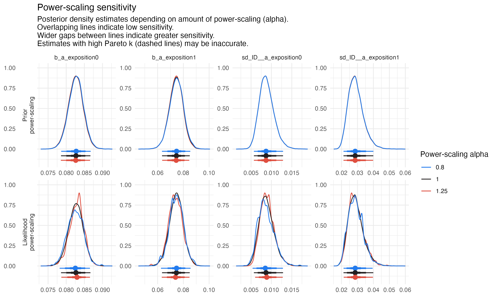
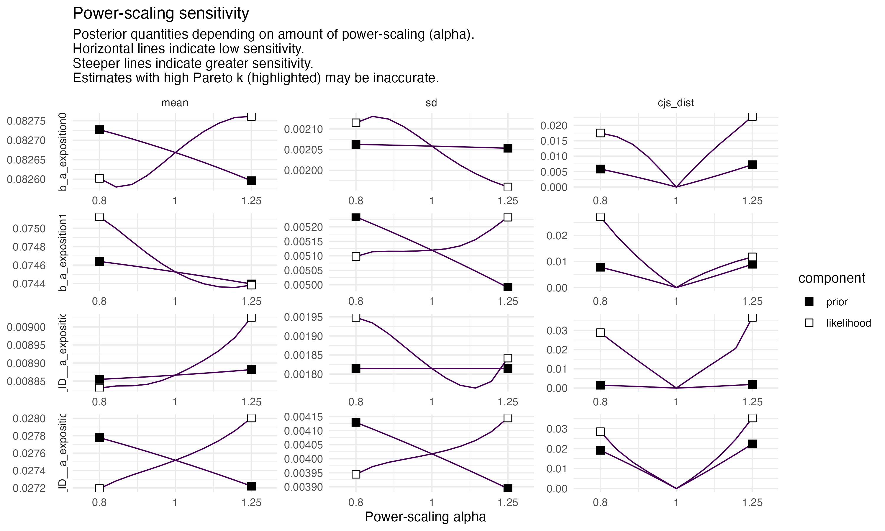

Figure 7.1: Posterior predictive checks of both models (1 = left ; 2 = right). This figure helps comparing observed data to simulated data from the posterior predictive distribution.
The fit from both models are similar so the first model was kept.
7.1.2 Test of different model parametrization
Different models were tested to chose the appropriate model. We tested the inclusion of individual variation and of a correlation between \(L0\) and \(a\).
Code
# Null modelbf.mod.null <-bf( L ~ L0+a*t, L0~1, a~1,center=T,nl=T )# Individual variation in growth rate onlybf.mod.vi <-bf( L ~ L0+a*t, L0~1+(1||ID), a~1+(1||ID),center=T,nl=T )# Effect of the pesticide on mean growth rate, no individual variationbf.mod.trt <-bf( L ~ L0+a*t, L0~1, a~0+exposition,center=T,nl=T )# Addition of inter-individual variation in growth rate, depending on exposition# bf.mod (Defined above)# Addition of a correlation between initial length and growth ratebf.mod.trt.vi.cor <-bf( L ~ L0+a*t, L0~1+(1|c|ID), a~0+exposition+(0+exposition|c|ID),center=T,nl=T )
We use the same priors for all models.
Code
priors.null <-prior(normal(2.32, 2.32*0.2), class = b, nlpar = L0, lb =0) +# Mean values of a prior(normal(0.070, 0.070*0.2), class=b, nlpar = a) +# Résidusprior(exponential(1), sigma)priors.vi <-prior(normal(2.32, 2.32*0.2), class = b, nlpar = L0, lb =0) +prior(normal(2.32*0.2, 2.32*0.2), class = sd, nlpar = L0)+# Mean values of a for the two cohortsprior(normal(0.070, 0.070*0.2), class=b, nlpar = a) +# Individual variations values of a for the two cohortsprior(normal(0.070*0.2, 0.070), class=sd, group=ID, nlpar = a)+# Résidusprior(exponential(1), sigma)priors.trt <-prior(normal(2.32, 2.32*0.2), class = b, nlpar = L0, lb =0) +# Mean values of a for the two cohortsprior(normal(0.070, 0.070*0.2), class=b, coef=exposition0, nlpar = a) +prior(normal(0.070, 0.070*0.2), class=b, coef=exposition1, nlpar = a) +# Résidusprior(exponential(1), sigma)priors.trt.vi.cor <-prior(normal(2.32, 2.32*0.2), class = b, nlpar = L0, lb =0) +prior(normal(2.32*0.2, 2.32*0.2), class = sd, nlpar = L0)+# Mean values of a for the two cohortsprior(normal(0.070, 0.070*0.2), class=b, coef=exposition0, nlpar = a) +prior(normal(0.070, 0.070*0.2), class=b, coef=exposition1, nlpar = a) +# Individual variations values of a for the two cohortsprior(normal(0.070*0.2, 0.070), class=sd, coef=exposition0, group=ID, nlpar = a)+prior(normal(0.070*0.2, 0.070), class=sd, coef=exposition1, group=ID, nlpar = a)+# Default prior for correlations# Résidusprior(exponential(1), sigma)
Figure 7.3: LOO comparison plot of all tested models.
Two models have minimum WAIC and LOO : m.trt.vi & m.trt.vi.cor. The addition of the correlation do not add much to the model and the correlation is relatively low (around 0.4) so we decided to keep our model simple and not include the correlation.
7.2 Checking priors sensitivity
We further validated our prior choices using power scaling with the priorsense package (Kallioinen et al., 2024). All diagnostics indicated that our inferences are robust to prior choice :
The following table show the standard deviation of the prior distribution, the standard deviation of the likelihood distribution and a diagnosis on whether there is a conflict between the prior and data.
This function evaluates the sensitivity of a prior distribution using power-scaling, a method that modifies the prior distribution by raising it to a power \(\gamma\). The goal is to assess how robust posterior inferences are to different prior strengths.
Plots the density of the prior and power-scaled priors for different values of \(\gamma\). This helps visualize how power scaling changes the shape of the prior.

Priors sensitivity.
Code
# Another very heavy object# p_ecdf <- powerscale_plot_ecdf(# m.trt.vi,# variable = c(# "b_a_exposition0",# "b_a_exposition1",# "sd_ID__a_exposition0",# "sd_ID__a_exposition1"# )# )+# theme_minimal()# # ggsave(# filename="Plot_priors_sensitivity_1.png",# plot=p_ecdf,# width=10, height = 6,# path=here::here("fig/")# )knitr::include_graphics(here::here("fig/Plot_priors_sensitivity_1.png"))
1
Plots the empirical cumulative distribution function (ECDF) of the prior and power-scaled priors, making it easier to compare the distributions.
Plots posterior summary statistics (e.g., mean, median, credible intervals) as a function of \(\gamma\). This helps assess how sensitive posterior estimates are to the prior.

Priors sensitivity.
7.3 Comparison with a frequentist approach
7.3.1 Frequentist LMMs using glmmTMB
Close replicates of our bayesian models were made using a frequentist approach with glmmTMB (Brooks et al., 2017).
Code
# Model with no effect between cohortsglmmTMB.null =glmmTMB( L ~ t , df_growth )# Model with the effect of the pesticide onlyglmmTMB.trt <-glmmTMB( L ~ exposition * t, df_growth )# Model with only inter-individual variationglmmTMB.vi <-glmmTMB( L ~ t + (t|ID), df_growth )# Model with the effect of the pesticide and inter-individual variation not depending on expositionglmmTMB.trt.vi <-glmmTMB( L ~ exposition * t + (t|ID), df_growth )# Model with the effect of the pesticide and inter-individual variation depending on expositionglmmTMB.trt.vi.2<-glmmTMB( L ~ exposition * t + (exposition * t || ID), df_growth )
Brooks, M., E., Kristensen, K., Benthem, van, J., Magnusson, A., Berg, C., W., Nielsen, A., Skaug, H., J., Mächler, M., & Bolker, B., M. (2017). glmmTMB Balances Speed and Flexibility Among Packages for Zero-inflated Generalized Linear Mixed Modeling. The R Journal, 9(2), 378. https://doi.org/10.32614/RJ-2017-066
Kallioinen, N., Paananen, T., Bürkner, P.-C., & Vehtari, A. (2024). Detecting and diagnosing prior and likelihood sensitivity with power-scaling. Statistics and Computing, 34(1), 57. https://doi.org/10.1007/s11222-023-10366-5
Source Code
```{r libraries, include=F, warning=F, message=F}library(here)source(file = here::here("functions/functions.R"))f_load_libraries_colors() ```# Supplementary information```{r data, warning=F, message=F}df_growth <- read_excel(here::here("data/Data_growth_EPX_DMX.xlsx"), sheet="Growth") # <1>dead <- subset(df_growth, t==14 & status == "D")$ID # <2>df_growth <- df_growth |> subset((!ID %in% dead)) |> # <3> mutate( L = w^(1/3), exposition = 0 + 1*(exposition == "Trt"), exposition_f = as.factor(exposition) )df_growth$exposition <- as.factor(df_growth$exposition)df_growth$ID <- as.factor(df_growth$ID)df_growth_mean <- df_growth |> # <6> aggregate(w ~ t + exposition, mean) # <6># Number of individuals in each groupn_ctrl <- length(subset(df_growth, t==0 & exposition == 0)$ID)n_trt <- length(subset(df_growth, t==0 & exposition == 1)$ID)```## Choice of the model### Linearisation of growthWe tested 2 different types of linearisation of growth :1. The original model with $L=W^{1/3}$2. A model where $L=\text{Ln}(W)$```{r dataLn}#| code-fold: showdf_growth_Ln <- df_growth |> mutate(L=log(w))``````{r modedef}#| code-fold: showbf.mod.VI <- # <1> bf( # <1> L ~ L0+a*t, # <1> L0 ~ 1 + (1||ID), # <1> a ~ 0 + exposition+(0+exposition||ID),# <1> # <1> center=T, # <1> nl=T # <1> ) # <1>bf.mod.Ln <- # <2> bf( # <2> L ~ L0+a*t, # <2> L0 ~ 1 + (1||ID), # <2> a ~ 0 + exposition+(0+exposition||ID),# <2> # <2> center=T, # <2> nl=T # <2> ) # <2>```1. $L=W^{1/3}$2. $L=\text{Ln}(W)$We use the same priors as in @sec-Dpriors.```{r prior}#| code-fold: show# Priors definitionpriors <- prior(normal(2.32, 2.32*0.2), class = b, nlpar = L0, lb = 0) + # <1> prior(normal(2.32*0.2, 2.32*0.2), class = sd, nlpar = L0)+ # <2> prior(normal(0.070, 0.070*0.2), class=b, coef=exposition0, nlpar = a) + # <3> prior(normal(0.070, 0.070*0.2), class=b, coef=exposition1, nlpar = a) + # <4> prior(normal(0.070*0.2, 0.070), class=sd, # <5> coef=exposition0, group=ID, nlpar = a)+ # <5> prior(normal(0.070*0.2, 0.070), class=sd, # <6> coef=exposition1, group=ID, nlpar = a)+ # <6> prior(exponential(1), sigma, nlpar="") # <7>```1. Prior on $L0_{\mu}$2. Prior on $L0_{\sigma}$3. Prior on $a_{\text{ctrl},\mu}$4. Prior on $a_{\text{trt},\mu}$5. Prior on $a_{\text{ctrl},\sigma}$6. Prior on $a_{\text{trt},\sigma}$7. Prior on residuals```{r modrun}#| code-fold: showm.post <- brm( data = df_growth, bf.mod.VI, backend = "cmdstanr", prior = priors, save_pars = save_pars(all = TRUE), sample_prior = "yes", seed = 42, chains = 4, cores = 4, iter = 6000, warmup = 1000, control = list(adapt_delta = .95, max_treedepth = 12), file=here::here("mod/m_brms_VI_post") )m.Ln.post <- brm( data = df_growth_Ln, bf.mod.Ln, backend = "cmdstanr", prior = priors, save_pars = save_pars(all = TRUE), sample_prior = "yes", seed = 42, chains = 4, cores = 4, iter = 6000, warmup = 1000, control = list(adapt_delta = .95, max_treedepth = 12), file=here::here("mod/m_brms_Ln_post") )``````{r, message=F, warning=F}#| fig-cap: Posterior predictive checks of both models (1 = left ; 2 = right). This figure helps comparing observed data to simulated data from the posterior predictive distribution.#| label: fig-ppcheckcomp#| fig-height: 4#| fig-width: 8p1 <- pp_check(m.post, ndraws = 100) + scale_color_manual(values = c(Nord_polar[1], Nord_frost[3]))p2 <- pp_check(m.Ln.post, ndraws = 100)+ scale_color_manual(values = c(Nord_polar[1], Nord_frost[3]))p <- p1+p2+ plot_layout(ncol = 2) & theme_minimal()p``````{r saveppacheck, include=F}ggsave( filename="CompMod_CubeLn_ppcheck.png", plot=p, width=8, height = 5, path=here::here("fig/") )```The fit from both models are similar so the first model was kept.### Test of different model parametrizationDifferent models were tested to chose the appropriate model. We tested the inclusion of individual variation and of a correlation between $L0$ and $a$.```{r compmoddef}#| code-fold: show# Null modelbf.mod.null <- bf( L ~ L0+a*t, L0~1, a~1, center=T, nl=T )# Individual variation in growth rate onlybf.mod.vi <- bf( L ~ L0+a*t, L0~1+(1||ID), a~1+(1||ID), center=T, nl=T )# Effect of the pesticide on mean growth rate, no individual variationbf.mod.trt <- bf( L ~ L0+a*t, L0~1, a~0+exposition, center=T, nl=T )# Addition of inter-individual variation in growth rate, depending on exposition# bf.mod (Defined above)# Addition of a correlation between initial length and growth ratebf.mod.trt.vi.cor <- bf( L ~ L0+a*t, L0~1+(1|c|ID), a~0+exposition+(0+exposition|c|ID), center=T, nl=T )```We use the same priors for all models.```{r priorscompmod}#| code-fold: showpriors.null <- prior(normal(2.32, 2.32*0.2), class = b, nlpar = L0, lb = 0) + # Mean values of a prior(normal(0.070, 0.070*0.2), class=b, nlpar = a) + # Résidus prior(exponential(1), sigma)priors.vi <- prior(normal(2.32, 2.32*0.2), class = b, nlpar = L0, lb = 0) + prior(normal(2.32*0.2, 2.32*0.2), class = sd, nlpar = L0)+ # Mean values of a for the two cohorts prior(normal(0.070, 0.070*0.2), class=b, nlpar = a) + # Individual variations values of a for the two cohorts prior(normal(0.070*0.2, 0.070), class=sd, group=ID, nlpar = a)+ # Résidus prior(exponential(1), sigma)priors.trt <- prior(normal(2.32, 2.32*0.2), class = b, nlpar = L0, lb = 0) + # Mean values of a for the two cohorts prior(normal(0.070, 0.070*0.2), class=b, coef=exposition0, nlpar = a) + prior(normal(0.070, 0.070*0.2), class=b, coef=exposition1, nlpar = a) + # Résidus prior(exponential(1), sigma)priors.trt.vi.cor <- prior(normal(2.32, 2.32*0.2), class = b, nlpar = L0, lb = 0) + prior(normal(2.32*0.2, 2.32*0.2), class = sd, nlpar = L0)+ # Mean values of a for the two cohorts prior(normal(0.070, 0.070*0.2), class=b, coef=exposition0, nlpar = a) + prior(normal(0.070, 0.070*0.2), class=b, coef=exposition1, nlpar = a) + # Individual variations values of a for the two cohorts prior(normal(0.070*0.2, 0.070), class=sd, coef=exposition0, group=ID, nlpar = a)+ prior(normal(0.070*0.2, 0.070), class=sd, coef=exposition1, group=ID, nlpar = a)+ # Default prior for correlations # Résidus prior(exponential(1), sigma)``````{r compmodrun}#| code-fold: showm.null <- brm( data = df_growth, bf.mod.null, backend = "cmdstanr", prior = priors.null, save_pars = save_pars(all = TRUE), sample_prior = "yes", seed = 42, chains = 4, cores = 4, iter = 6000, warmup = 1000, control = list( adapt_delta = .95, max_treedepth = 12 ), file=here::here("mod/model_choice/m.null") )m.vi <- brm( data = df_growth, bf.mod.vi, backend = "cmdstanr", prior = priors.vi, save_pars = save_pars(all = TRUE), sample_prior = "yes", seed = 42, chains = 4, cores = 4, iter = 6000, warmup = 1000, control = list( adapt_delta = .95, max_treedepth = 12 ), file=here::here("mod/model_choice/m.vi") )m.trt <- brm( data = df_growth, bf.mod.trt, backend = "cmdstanr", prior = priors.trt, save_pars = save_pars(all = TRUE), sample_prior = "yes", seed = 42, chains = 4, cores = 4, iter = 6000, warmup = 1000, control = list( adapt_delta = .95, max_treedepth = 12 ), file=here::here("mod/model_choice/m.trt") )m.trt.vi <- m.postm.trt.vi.cor <- brm( data = df_growth, bf.mod.trt.vi.cor, backend = "cmdstanr", prior = priors.trt.vi.cor, save_pars = save_pars(all = TRUE), sample_prior = "yes", seed = 42, chains = 4, cores = 4, iter = 6000, warmup = 1000, control = list( adapt_delta = .95, max_treedepth = 12 ), file=here::here("mod/model_choice/m.trt.vi.cor") )``````{r addcriterion, warning=F, message=F}m.null <- add_criterion(m.null, criterion=c("waic", "loo"))m.vi <- add_criterion(m.vi, criterion=c("waic", "loo"))m.trt <- add_criterion(m.trt, criterion=c("waic", "loo"))m.trt.vi <- add_criterion(m.trt.vi, criterion=c("waic", "loo"))m.trt.vi.cor <- add_criterion(m.trt.vi.cor, criterion=c("waic", "loo"))```::: panel-tabset## WAIC comparison```{r compmodwaic, warning=F, message=F}#| fig-cap: WAIC comparison plot of all tested models. #| label: fig-waicplot#| fig-height: 4#| fig-width: 6w <- loo_compare(m.null, m.vi, m.trt, m.trt.vi, m.trt.vi.cor, criterion = "waic")#print(w, simplify = F)cbind(waic_diff = w[, 1] * -2, se = w[, 2] * 2)plot <- w[, 7:8] %>% data.frame() %>% rownames_to_column("model_name") %>% ggplot( aes( x = waic, y = model_name, xmin = waic - se_waic, xmax = waic + se_waic) ) + geom_pointrange( color = pal_col[2], fill = pal_col[2], shape = 21, alpha=0.7 ) + labs( title = "WAIC comparison", x = NULL, y = NULL ) + theme_bw()+ theme(axis.ticks.y = element_blank())plot``````{r saveWAIC, include=F}ggsave( filename="CompMod_WAIC.png", plot=plot, width=6, height = 4, path=here::here("fig/") )```## LOO comparison```{r compmodloo}#| fig-cap: LOO comparison plot of all tested models. #| label: fig-looplot#| fig-height: 4#| fig-width: 6w <- loo_compare(m.null, m.vi, m.trt, m.trt.vi, m.trt.vi.cor, criterion = "loo")#print(w, simplify = F)cbind(waic_diff = w[, 1] * -2, se = w[, 2] * 2)plot <- w[, 7:8] %>% data.frame() %>% rownames_to_column("model_name") %>% ggplot( aes( x = looic, y = model_name, xmin = looic - se_looic, xmax = looic + se_looic ) ) + geom_pointrange( color = pal_col[2], fill = pal_col[2], shape = 21 ) + labs( title = "L00 comparison", x = NULL, y = NULL ) + theme_bw()+ theme(axis.ticks.y = element_blank())plot``````{r saveLOO, include=F}ggsave( filename="CompMod_LOO.png", plot=plot, width=6, height = 4, path=here::here("fig/") )```:::Two models have minimum WAIC and LOO : m.trt.vi & m.trt.vi.cor. The addition of the correlation do not add much to the model and the correlation is relatively low (around 0.4) so we decided to keep our model simple and not include the correlation.## Checking priors sensitivity {#sec-Fpriorsens}We further validated our prior choices using power scaling with the priorsense package [@kallioinen_2024]. All diagnostics indicated that our inferences are robust to prior choice :The following table show the standard deviation of the prior distribution, the standard deviation of the likelihood distribution and a diagnosis on whether there is a conflict between the prior and data.```{r priorsens1}#| tbl-cap: Priors sensitivitytbl_powerscale_sens <- powerscale_sensitivity( # <1> m.trt.vi, # <1> variable = c( # <1> "b_a_exposition0", # <1> "b_a_exposition1", # <1> "sd_ID__a_exposition0", # <1> "sd_ID__a_exposition1" # <1> ) # <1> ) # <1>tbl_powerscale_sens |> DT::datatable( options = list(dom = 't'), class="hover", rownames=FALSE )```1. This function evaluates the sensitivity of a prior distribution using power-scaling, a method that modifies the prior distribution by raising it to a power $\gamma$. The goal is to assess how robust posterior inferences are to different prior strengths.There is no a conflict on the prior and the data.::: panel-tabset## Plot dens```{r priorsens2}#| fig-cap: Priors sensitivity.#| fig-height: 6#| fig-width: 10# A very heavy object (4.5 GB)# p_dens <- powerscale_plot_dens(# m.trt.vi,# variable = c(# "b_a_exposition0",# "b_a_exposition1",# "sd_ID__a_exposition0",# "sd_ID__a_exposition1"# )# )+# theme_minimal()# # ggsave(# filename="Plot_priors_sensitivity_2.png",# plot=p_dens,# width=10, height = 6,# path=here::here("fig/")# )knitr::include_graphics(here::here("fig/Plot_priors_sensitivity_2.png")) # <1>```1. Plots the density of the prior and power-scaled priors for different values of $\gamma$. This helps visualize how power scaling changes the shape of the prior.## plot ecdf```{r priorsens3}#| fig-cap: Priors sensitivity.#| fig-height: 6#| fig-width: 10# Another very heavy object# p_ecdf <- powerscale_plot_ecdf(# m.trt.vi,# variable = c(# "b_a_exposition0",# "b_a_exposition1",# "sd_ID__a_exposition0",# "sd_ID__a_exposition1"# )# )+# theme_minimal()# # ggsave(# filename="Plot_priors_sensitivity_1.png",# plot=p_ecdf,# width=10, height = 6,# path=here::here("fig/")# )knitr::include_graphics(here::here("fig/Plot_priors_sensitivity_1.png")) # <1>```1. Plots the empirical cumulative distribution function (ECDF) of the prior and power-scaled priors, making it easier to compare the distributions.## Plot quantities```{r priorsens4}#| fig-cap: Priors sensitivity.#| fig-height: 6#| fig-width: 10# Another very heavy object# p_quant <- powerscale_plot_quantities(# m.trt.vi,# variable = c(# "b_a_exposition0",# "b_a_exposition1",# "sd_ID__a_exposition0",# "sd_ID__a_exposition1"# ),# mcse = TRUE# )+# theme_minimal()# # ggsave(# filename="Plot_priors_sensitivity_3.png",# plot=p_quant,# width=10, height = 6,# path=here::here("fig/")# )knitr::include_graphics(here::here("fig/Plot_priors_sensitivity_3.png")) # <1>```1. Plots posterior summary statistics (e.g., mean, median, credible intervals) as a function of $\gamma$. This helps assess how sensitive posterior estimates are to the prior.:::## Comparison with a frequentist approach### Frequentist LMMs using glmmTMBClose replicates of our bayesian models were made using a frequentist approach with glmmTMB [@brooks_2017].```{r freq}#| code-fold: show# Model with no effect between cohortsglmmTMB.null = glmmTMB( L ~ t , df_growth )# Model with the effect of the pesticide onlyglmmTMB.trt <- glmmTMB( L ~ exposition * t, df_growth )# Model with only inter-individual variationglmmTMB.vi <- glmmTMB( L ~ t + (t|ID), df_growth )# Model with the effect of the pesticide and inter-individual variation not depending on expositionglmmTMB.trt.vi <- glmmTMB( L ~ exposition * t + (t|ID), df_growth )# Model with the effect of the pesticide and inter-individual variation depending on expositionglmmTMB.trt.vi.2 <- glmmTMB( L ~ exposition * t + (exposition * t || ID), df_growth )```:::::::: panel-tabset## Null model::: panel-tabset### Model summary```{r modsum1, message=F, warning=F}#| tbl-cap: Model summarymodelsummary(glmmTMB.null)```### Assumption check```{r assump1, message=F, warning=F}#| fig-cap: Check assumptions#| fig-width: 10#| fig-height: 10check_model(glmmTMB.null)```### Estimates plot```{r est1, message=F, warning=F}#| fig-cap: Estimates of the model#| fig-width: 6#| fig-height: 4modelplot(glmmTMB.null, color = pal_col[1])```:::## Effect of pesticides only::: panel-tabset### Model summary```{r modsum2, message=F, warning=F}#| tbl-cap: Model summarymodelsummary(glmmTMB.trt)```### Assumption check```{r assump2, message=F, warning=F}#| fig-cap: Check assumptions#| fig-width: 10#| fig-height: 10check_model(glmmTMB.trt)```### Estimates plot```{r est2, message=F, warning=F}#| fig-cap: Estimates of the model#| fig-width: 6#| fig-height: 4modelplot(glmmTMB.trt, color = pal_col[1])```:::## Individual variation only::: panel-tabset### Model summary```{r modsum3, message=F, warning=F}#| tbl-cap: Model summarymodelsummary(glmmTMB.vi)```### Assumption check```{r assump3, message=F, warning=F}#| fig-cap: Check assumptions#| fig-width: 10#| fig-height: 10check_model(glmmTMB.vi)```### Estimates plot```{r est3, message=F, warning=F}#| fig-cap: Estimates of the model#| fig-width: 6#| fig-height: 4modelplot(glmmTMB.vi, color = pal_col[1])```:::## Effect of pesticides and individual variation (not depending on exposition)::: panel-tabset### Model summary```{r modsum5, message=F, warning=F}#| tbl-cap: Model summarymodelsummary(glmmTMB.trt.vi)```### Assumption check```{r assump5, message=F, warning=F}#| fig-cap: Check assumptions#| fig-width: 10#| fig-height: 10check_model(glmmTMB.trt.vi)```### Estimates plot```{r est5, message=F, warning=F}#| fig-cap: Estimates of the model#| fig-width: 6#| fig-height: 4modelplot(glmmTMB.trt.vi, color = pal_col[1])```:::## Effect of pesticides and individual variation (depending on exposition)::: panel-tabset### Model summary```{r modsum6, message=F, warning=F}#| tbl-cap: Model summarymodelsummary(glmmTMB.trt.vi.2)```### Assumption check```{r assump6, message=F, warning=F}#| fig-cap: Check assumptions#| fig-width: 10#| fig-height: 10check_model(glmmTMB.trt.vi.2)```### Estimates plot```{r est6, message=F, warning=F}#| fig-cap: Estimates of the model#| fig-width: 6#| fig-height: 4modelplot(glmmTMB.trt.vi.2, color = pal_col[1])```:::::::::::```{r AICfreq, message=F, warning=F}# AIC model comparisoncompare_performance( glmmTMB.null, glmmTMB.trt, glmmTMB.vi, glmmTMB.trt.vi, glmmTMB.trt.vi.2, rank = TRUE, verbose = FALSE )``````{r, message=F, warning=F}#| fig-cap: Comparison of the frequentist models#| fig-width: 6#| fig-height: 4plot( compare_performance( glmmTMB.null, glmmTMB.trt, glmmTMB.vi, glmmTMB.trt.vi, glmmTMB.trt.vi.2, rank = TRUE, verbose = FALSE ) )```### Frequentist vs. Bayesian coefficients comparison```{r modlist}models <- list( "null.f" = glmmTMB.null, "null.b" = m.null, "trt.f" = glmmTMB.trt, "trt.b" = m.trt, "vi.f" = glmmTMB.vi, "vi.b" = m.vi, "trt.vi.f" = glmmTMB.trt.vi.2, "trt.vi.b" = m.trt.vi )``````{r compbf, warning=F, message=F}#| tbl-cap: Comparison of the frequentist vs. Bayesian model coefficients# tb_freqbaycomp <- modelsummary(models, statistic = 'conf.int')# save(tb_freqbaycomp, file = here::here("mod/model_choice/Table_coef_freq_vs_bayes.rds"))# load(here::here("mod/model_choice/Table_coef_freq_vs_bayes.rds"))# tb_freqbaycomp```::: panel-tabset## Null models```{r compnull, message=F, warning=F}#| fig-cap: Comparison of the null models#| fig-height: 4#| fig-width: 6modelplot(models[1:2])+ scale_color_manual(values = pal_col)```## Models with pesticides effect```{r comptrt, message=F, warning=F}#| fig-cap: Comparison of the models with pesticides effect#| fig-height: 4#| fig-width: 6modelplot(models[3:4])+ scale_color_manual(values = pal_col)```## Models with individual variation```{r compvi, message=F, warning=F}#| fig-cap: Comparison of the models with individual variation#| fig-height: 4#| fig-width: 6modelplot(models[5:6])+ scale_color_manual(values = pal_col)```## Models with pesticides effect and individual variation```{r comptrtvi, message=F, warning=F}#| fig-cap: Comparison of the models with pesticides effect and individual variation#| fig-height: 4#| fig-width: 6modelplot(models[7:8])+ scale_color_manual(values = pal_col)```:::All estimates are relatively similar.<button class="accordion-button" type="button" data-bs-toggle="collapse" data-bs-target="#collapseOne"><b> Session Information </b></button>:::: {#collapseOne .accordion-collapse .collapse}<div>```{r}sessionInfo()```</div>::::